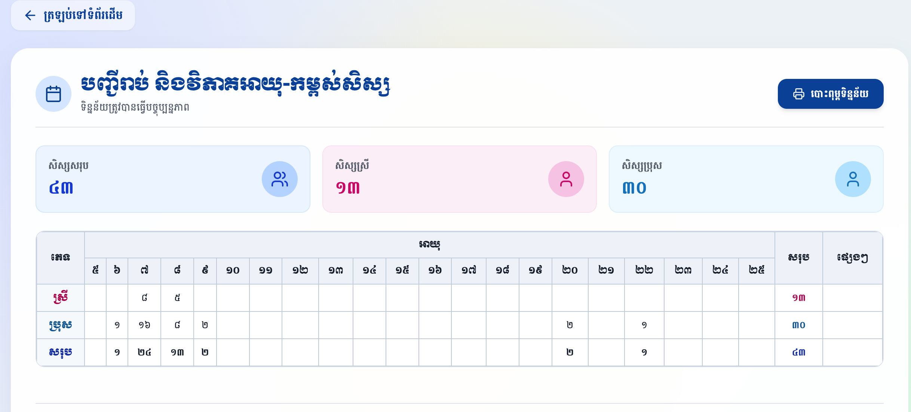
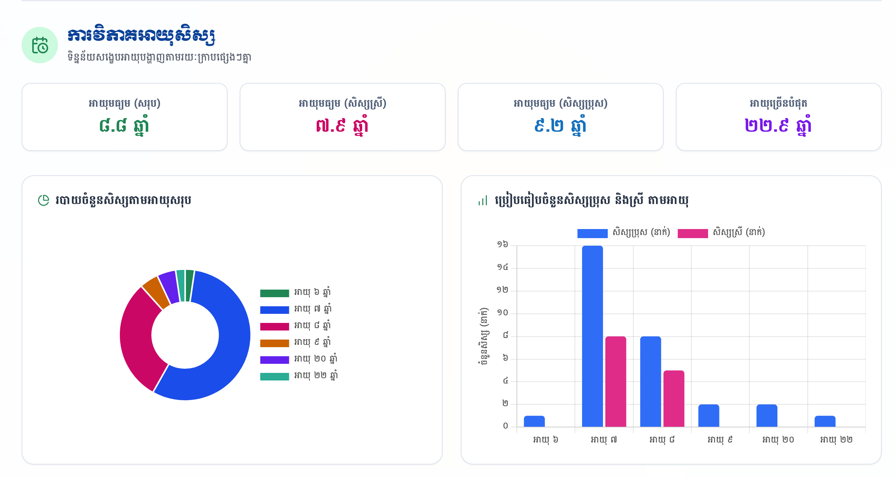
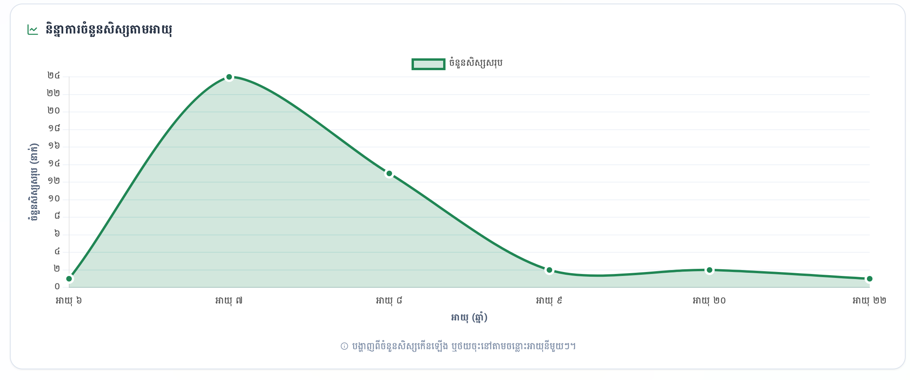
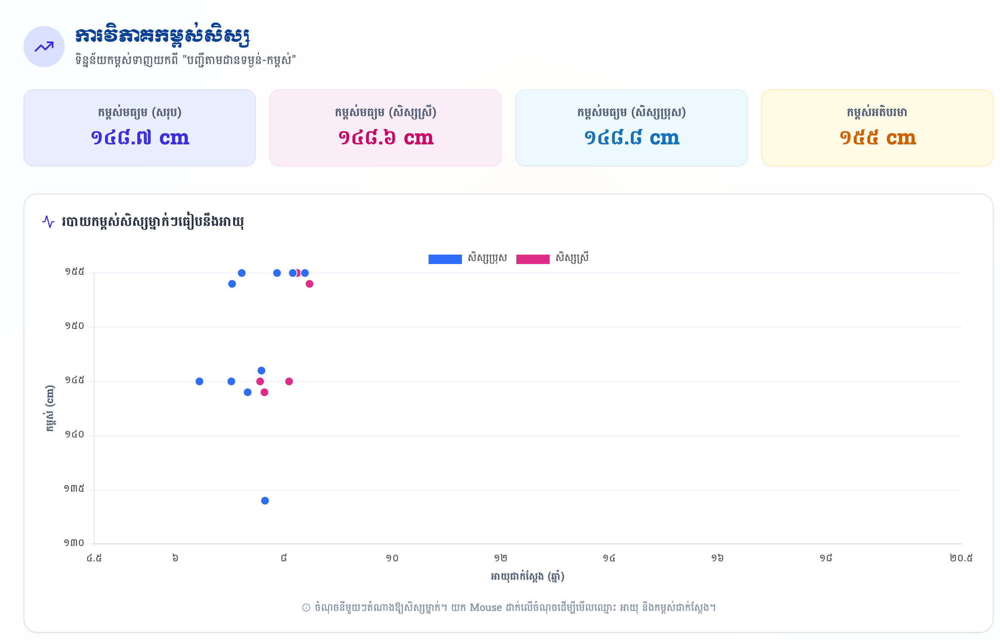

សៀវភៅណែនាំអំពីរបៀបអានទិន្នន័យ ស្វែងយល់ពីក្រាបវិភាគ និងការទាញយករបាយការណ៍ស្ថិតិ
អាយុ និងកម្ពស់របស់សិស្សក្នុងថ្នាក់។
ផ្នែកខាងលើនៃប្រព័ន្ធបង្ហាញពីស្ថិតិសរុបរហ័ស និងតារាងរាប់ចំនួនសិស្សប្រុស-ស្រី តាមអាយុនីមួយៗ ដែលប្រព័ន្ធទាញយកពីបញ្ជីឈ្មោះសិស្សមកគណនាដោយស្វ័យប្រវត្តិ៖

បង្ហាញចំនួនសិស្សសរុប សិស្សស្រី និងសិស្សប្រុស ដែលមាននៅក្នុងថ្នាក់របស់អ្នក ដើម្បីងាយស្រួលផ្ទៀងផ្ទាត់ចំនួនជាក់ស្តែង។
តារាងនេះបែងចែកសិស្សតាមភេទ (ជួរដេក) និងអាយុពី ៥ ដល់ ២៥ ឆ្នាំ (ជួរឈរ) ដោយបំពេញលេខដោយស្វ័យប្រវត្តិយោងតាមថ្ងៃខែឆ្នាំកំណើត។
ប៊ូតុង "បោះពុម្ពទិន្នន័យ" អនុញ្ញាតឱ្យលោកអ្នកទាញយកតារាង និងក្រាបទាំងអស់ជាទម្រង់ PDF ដែលមានក្បាលរដ្ឋបាលត្រឹមត្រូវ។
ផ្នែកបន្ទាប់បង្ហាញពីការវិភាគស៊ីជម្រៅតាមរយៈកម្រិតអាយុមធ្យម និងក្រាប២ប្រភេទ ដើម្បីអានពីសមាមាត្រ និងការប្រៀបធៀប៖

បង្ហាញពីភាគរយនៃសិស្សសរុបតាមអាយុនីមួយៗ។ ឧទាហរណ៍៖ ចំណិតធំជាងគេមានន័យថា អាយុនោះមានសិស្សច្រើនជាងគេក្នុងថ្នាក់។ លោកអ្នកអាចយក Mouse ដាក់លើចំណិត ដើម្បីមើលចំនួនជាក់ស្តែង។
ងាយស្រួលក្នុងការប្រៀបធៀបចំនួនសិស្សប្រុស (ពណ៌ខៀវ) និងសិស្សស្រី (ពណ៌ផ្កាឈូក) នៅតាមអាយុនីមួយៗ ថាតើភេទណាមានចំនួនច្រើនជាងនៅចន្លោះវ័យណា។
ក្រាបខ្សែបន្ទាត់ (Line Chart) ជួយឱ្យយើងមើលឃើញជារូបភាពបន្តបន្ទាប់ពី "ចរន្ត" ឬ "និន្នាការ" នៃកំណើន និងការថយចុះនៃចំនួនសិស្សនៅតាមចន្លោះអាយុ៖

ទិន្នន័យកម្ពស់ត្រូវបានទាញយកពី "បញ្ជីតាមដានទម្ងន់-កម្ពស់" មកបង្ហាញក្នុងទម្រង់ក្រាបចំណុច (Scatter Chart) ដ៏ឆ្លាតវៃ ដើម្បីវិភាគថាតើសិស្សលូតលាស់ស្របនឹងអាយុដែរឬទេ៖

ប្រព័ន្ធបង្ហាញកម្ពស់មធ្យមគិតជាសង់ទីម៉ែត្រ (cm) បែងចែកជា សរុប ប្រុស ស្រី និងសិស្សដែលមានកម្ពស់ខ្ពស់ជាងគេបំផុត។
អ័ក្សឈរជាកម្ពស់ អ័ក្សដេកជាអាយុជាក់ស្តែងមានក្បៀសខែ។ ដាក់ Mouse លើចំណុចដើម្បីមើលឈ្មោះ អាយុ និងកម្ពស់របស់សិស្សម្នាក់ៗ។
ដើម្បីស្វែងយល់កាន់តែច្បាស់ និងការអនុវត្តជាក់ស្តែងពីរបៀបបោះពុម្ពតារាងចំណាត់ថ្នាក់នេះ សូមទស្សនាវីដេអូណែនាំខាងក្រោម៖